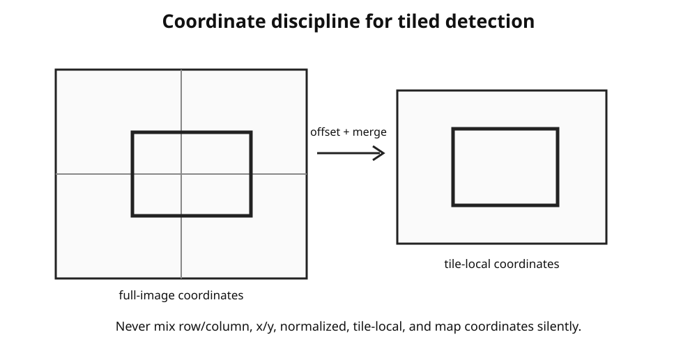

OmniPhenoR Object Detection: From Bounding Boxes to Agronomic Counts
Source:vignettes/v15-object-detection.Rmd
v15-object-detection.RmdPurpose
Object detection is useful when the scientific question depends on
the number, position, or class of discrete structures such as flowers,
fruits, seeds, leaves, insects, weeds, or plots. OmniPhenoR represents
detections with a canonical pheno_detection object so that
the same downstream code can accept a mock model, an R adapter,
Ultralytics YOLO, or another external detector. The original YOLO
formulation framed object detection as direct prediction of bounding
boxes and class probabilities (Redmon et al. 2016).
1. Canonical detection object
d <- pheno_detection(
data.frame(
class = c("flower", "flower", "fruit"),
confidence = c(.97, .91, .88),
xmin = c(20, 130, 250),
ymin = c(40, 55, 100),
xmax = c(75, 185, 330),
ymax = c(105, 125, 190)
),
image_size = c(240, 400),
image_id = "plot07_plant03"
)
d
#> <pheno_detection>
#> objects: 3
#> engine: native
#> image: plot07_plant03
#> classes: flower, fruitThe object stores the source engine and model metadata separately from the rectangular geometry.
2. Detection with a function adapter
mock_detector <- function(img) {
data.frame(
class = c("leaf", "leaf"),
confidence = c(.95, .84),
xmin = c(10, 65),
ymin = c(15, 20),
xmax = c(55, 115),
ymax = c(80, 90)
)
}
pred <- pheno_detect(
pheno_data("leaf_rgb"),
model = mock_detector,
confidence = .80,
image_id = "plant01"
)
pred
#> <pheno_detection>
#> objects: 2
#> engine: function
#> image: plant01
#> classes: leafThis route is deliberately useful in unit tests and teaching because it tests the canonical R pipeline without needing Python.
3. Coordinate systems

Rows and columns are not interchangeable with x/y. Normalized coordinates are not pixel coordinates. Tile-local coordinates are not full-image coordinates. OmniPhenoR therefore makes conversion explicit.
normalized <- pheno_coordinates(
d,
width = 400,
height = 240,
to = "normalized_xy"
)
head(normalized$data)
#> # A tibble: 3 × 12
#> class confidence xmin ymin xmax ymax object_id centroid_x centroid_y
#> <chr> <dbl> <dbl> <dbl> <dbl> <dbl> <int> <dbl> <dbl>
#> 1 flower 0.97 0.05 0.167 0.188 0.438 1 47.5 72.5
#> 2 flower 0.91 0.325 0.229 0.462 0.521 2 158. 90
#> 3 fruit 0.88 0.625 0.417 0.825 0.792 3 290 145
#> # ℹ 3 more variables: bbox_width <dbl>, bbox_height <dbl>, bbox_area <dbl>A round trip should recover the original coordinates apart from numerical tolerance.
pheno_coordinates(
normalized,
width = 400,
height = 240,
to = "pixel_xy"
)$data
#> # A tibble: 3 × 12
#> class confidence xmin ymin xmax ymax object_id centroid_x centroid_y
#> <chr> <dbl> <dbl> <dbl> <dbl> <dbl> <int> <dbl> <dbl>
#> 1 flower 0.97 20 40 75 105 1 47.5 72.5
#> 2 flower 0.91 130 55 185 125 2 158. 90
#> 3 fruit 0.88 250 100 330 190 3 290 145
#> # ℹ 3 more variables: bbox_width <dbl>, bbox_height <dbl>, bbox_area <dbl>4. Duplicate detections and overlap
Tiled or ensemble workflows can report the same object more than
once. pheno_merge_detections() performs confidence-ordered
non-maximum suppression using box IoU.
a <- pheno_detection(data.frame(
class="fruit", confidence=.95,
xmin=20, ymin=20, xmax=80, ymax=90
))
b <- pheno_detection(data.frame(
class="fruit", confidence=.80,
xmin=23, ymin=22, xmax=82, ymax=91
))
pheno_merge_detections(a, b, iou_threshold=.5)
#> <pheno_detection>
#> objects: 1
#> engine: merged
#> classes: fruitFor scientific work, keep the threshold in the provenance. A threshold chosen after inspecting treatment differences can introduce analysis bias.
5. Ground-truth metrics
truth <- pheno_detection(data.frame(
class=c("flower","flower"), confidence=1,
xmin=c(10,80), ymin=c(10,20),
xmax=c(40,115), ymax=c(45,60)
))
estimate <- pheno_detection(data.frame(
class=c("flower","flower"), confidence=c(.9,.7),
xmin=c(11,78), ymin=c(11,21),
xmax=c(41,116), ymax=c(44,61)
))
pheno_detection_metrics(truth, estimate)
#> $summary
#> # A tibble: 1 × 8
#> tp fp fn precision recall f1 mean_iou count_bias
#> <int> <int> <int> <dbl> <dbl> <dbl> <dbl> <int>
#> 1 2 0 0 1 1 1 0.881 0
#>
#> $matches
#> # A tibble: 2 × 4
#> truth_id pred_id class iou
#> <int> <int> <chr> <dbl>
#> 1 1 1 flower 0.884
#> 2 2 2 flower 0.878The returned summary includes precision, recall, F1, mean matched IoU, and count bias. This is intentionally smaller than the full COCO benchmark vocabulary. OmniPhenoR emphasizes interpretable metrics tied to phenotyping questions.
6. Counting accuracy
A detector may have acceptable localization but still produce biased counts. Counts should therefore be evaluated directly.
pheno_count_metrics(
truth = c(18, 22, 16, 30, 25),
prediction = c(17, 24, 15, 28, 25)
)
#> # A tibble: 1 × 6
#> n bias mae rmse relative_error correlation
#> <int> <dbl> <dbl> <dbl> <dbl> <dbl>
#> 1 5 -0.4 1.2 1.41 0.0551 0.963For flower or fruit counts, MAE and count bias often have immediate biological meaning.
7. Bounding boxes are not morphological masks
A box area is not a leaf area. Box width and height may be useful descriptors, but they should not be silently interpreted as organ morphology. If organ area, perimeter, lesion fraction, or contour shape is the endpoint, use instance segmentation or another valid mask-generation step.
8. Detection to spatial features
For image-coordinate visualization and joins:
boxes_sf <- pheno_detection_to_sf(d)
plot(boxes_sf["class"])An image-coordinate sf object is not automatically
georeferenced. A further transformation is required before combining it
with field maps or UAV coordinates.
9. Suggested validation grid
A detector should be evaluated across:
- object density;
- small and large objects;
- partial edge objects;
- occlusion;
- contrasting backgrounds;
- acquisition dates;
- cultivars/genotypes;
- disease or senescence states;
- camera distances and resolutions.
The validation sample should remain independent of the tuning sample.
10. Reporting checklist
Report the model and hash, confidence threshold, IoU/NMS threshold, image size, tile settings if used, class definitions, ground-truth annotation protocol, matching IoU, count error, and the biological unit used for statistical analysis.
Final perspective
Object detection becomes scientifically useful only after bounding boxes are connected to explicit class definitions, validated counts, experimental identity, and reproducible thresholds. OmniPhenoR’s role is to keep those connections visible.